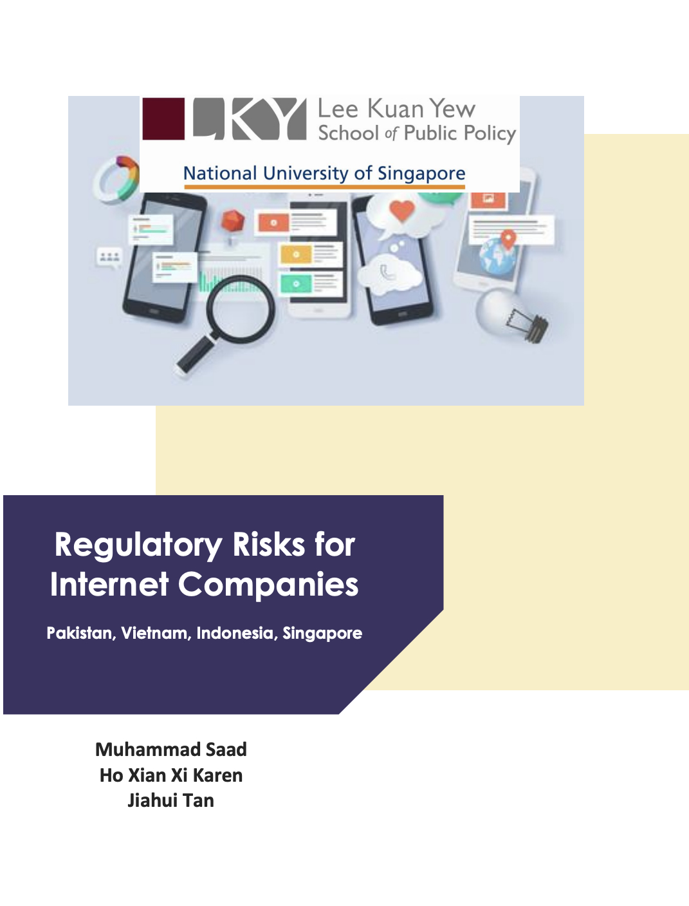
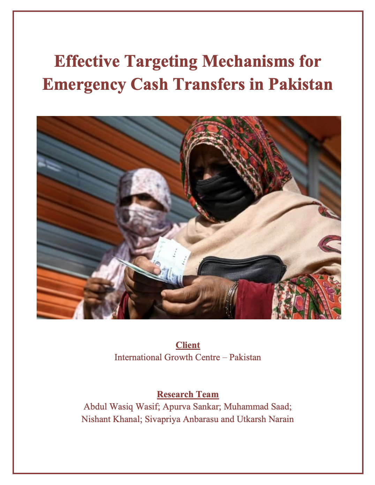

Featured Report
Data Localization in Pakistan
Developed for the Asia Internet Coalition and LIRNEasia Solutions,
this report examines the legal, regulatory, economic, and sectoral
implications of data localization requirements in Pakistan. It assesses
how localization could affect digital trade, business costs,
cybersecurity risks, innovation, and the development of Pakistan's
digital economy.

Regulatory Risks for Internet Companies:
Pakistan, Vietnam, Indonesia, Singapore
This report assesses regulatory risks for internet
companies across four Asian jurisdictions, focusing on content
moderation, data privacy and localization, cybersecurity, and platform
governance. It combines legal analysis, public-domain research, and
stakeholder interviews to evaluate risks and propose mitigation
strategies for content hosting technology platforms

Effective Targeting Mechanisms for Emergency Cash Transfers in Pakistan
Developed for the International Growth Centre Pakistan, this
analysis examines how emergency cash transfer programs can better
identify vulnerable households during crises. We evaluate
targeting mechanisms, administrative constraints, and data systems to
support a more shock-responsive social protection system in Pakistan.